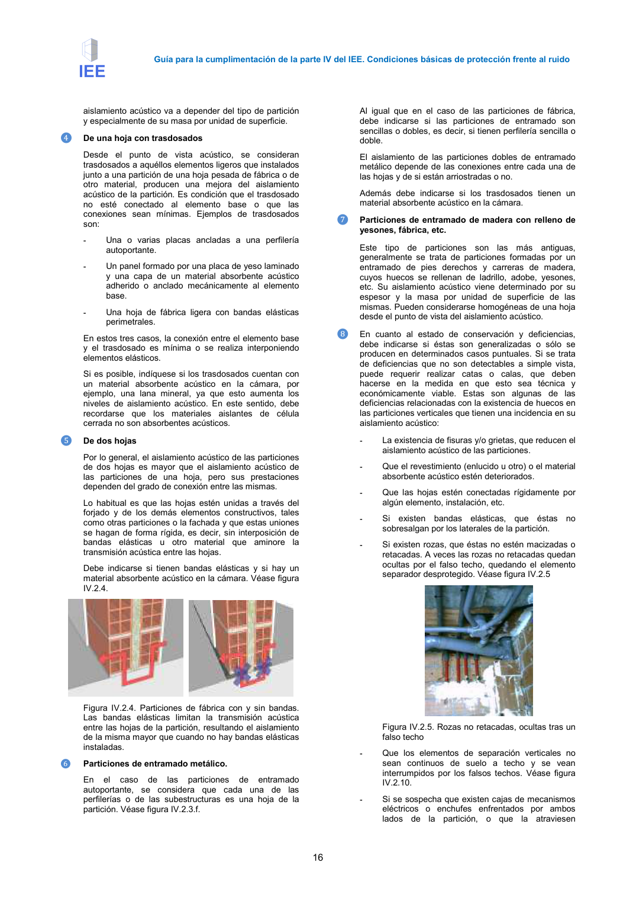

GUIA · Página 16 · versión 2016-11-01
SHA256: 813669d3066c0ff79457d57b80b0512a4fbb248bc5db1f7baf473c369a064738 · página física 16 de 65 · métodos de encabezado
solo si están cotejados.
Formatos: Markdown · JSON de bloques · PDF p. 16 · imagen PNG
Guía para la cumplimentación de la parte IV del IEE. Condiciones básicas de protección frente al ruido 16 aislamiento acústico va a depender del tipo de partición y especialmente de su masa por unidad de superficie. ❹ De una hoja con trasdosados Desde el punto de vista acústico, se consideran trasdosados a aquéllos elementos ligeros que instalados junto a una partición de una hoja pesada de fábrica o de otro material, producen una mejora del aislamiento acústico de la partición. Es condición que el trasdosado no esté conectado al elemento base o que las conexiones sean mínimas. Ejemplos de trasdosados son: - Una o varias placas ancladas a una perfilería autoportante. - Un panel formado por una placa de yeso laminado y una capa de un material absorbente acústico adherido o anclado mecánicamente al elemento base. - Una hoja de fábrica ligera con bandas elásticas perimetrales. En estos tres casos, la conexión entre el elemento base y el trasdosado es mínima o se realiza interponiendo elementos elásticos. Si es posible, indíquese si los trasdosados cuentan con un material absorbente acústico en la cámara, por ejemplo, una lana mineral, ya que esto aumenta los niveles de aislamiento acústico. En este sentido, debe recordarse que los materiales aislantes de célula cerrada no son absorbentes acústicos. ❺ De dos hojas Por lo general, el aislamiento acústico de las particiones de dos hojas es mayor que el aislamiento acústico de las particiones de una hoja, pero sus prestaciones dependen del grado de conexión entre las mismas. Lo habitual es que las hojas estén unidas a través del forjado y de los demás elementos constructivos, tales como otras particiones o la fachada y que estas uniones se hagan de forma rígida, es decir, sin interposición de bandas elásticas u otro material que aminore la transmisión acústica entre las hojas. Debe indicarse si tienen bandas elásticas y si hay un material absorbente acústico en la cámara. Véase figura IV.2.4. Figura IV.2.4. Particiones de fábrica con y sin bandas. Las bandas elásticas limitan la transmisión acústica entre las hojas de la partición, resultando el aislamiento de la misma mayor que cuando no hay bandas elásticas instaladas. ❻ Particiones de entramado metálico. En el caso de las particiones de entramado autoportante, se considera que cada una de las perfilerías o de las subestructuras es una hoja de la partición. Véase figura IV.2.3.f. Al igual que en el caso de las particiones de fábrica, debe indicarse si las particiones de entramado son sencillas o dobles, es decir, si tienen perfilería sencilla o doble. El aislamiento de las particiones dobles de entramado metálico depende de las conexiones entre cada una de las hojas y de si están arriostradas o no. Además debe indicarse si los trasdosados tienen un material absorbente acústico en la cámara. ❼ Particiones de entramado de madera con relleno de yesones, fábrica, etc. Este tipo de particiones son las más antiguas, generalmente se trata de particiones formadas por un entramado de pies derechos y carreras de madera, cuyos huecos se rellenan de ladrillo, adobe, yesones, etc. Su aislamiento acústico viene determinado por su espesor y la masa por unidad de superficie de las mismas. Pueden considerarse homogéneas de una hoja desde el punto de vista del aislamiento acústico. ❽ En cuanto al estado de conservación y deficiencias, debe indicarse si éstas son generalizadas o sólo se producen en determinados casos puntuales. Si se trata de deficiencias que no son detectables a simple vista, puede requerir realizar catas o calas, que deben hacerse en la medida en que esto sea técnica y económicamente viable. Estas son algunas de las deficiencias relacionadas con la existencia de huecos en las particiones verticales que tienen una incidencia en su aislamiento acústico: - La existencia de fisuras y/o grietas, que reducen el aislamiento acústico de las particiones. - Que el revestimiento (enlucido u otro) o el material absorbente acústico estén deteriorados. - Que las hojas estén conectadas rígidamente por algún elemento, instalación, etc. - Si existen bandas elásticas, que éstas no sobresalgan por los laterales de la partición. - Si existen rozas, que éstas no estén macizadas o retacadas. A veces las rozas no retacadas quedan ocultas por el falso techo, quedando el elemento separador desprotegido. Véase figura IV.2.5 Figura IV.2.5. Rozas no retacadas, ocultas tras un falso techo - Que los elementos de separación verticales no sean continuos de suelo a techo y se vean interrumpidos por los falsos techos. Véase figura IV.2.10. - Si se sospecha que existen cajas de mecanismos eléctricos o enchufes enfrentados por ambos lados de la partición, o que la atraviesen
